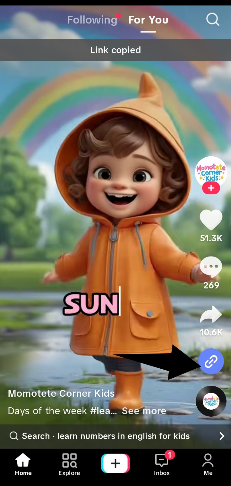
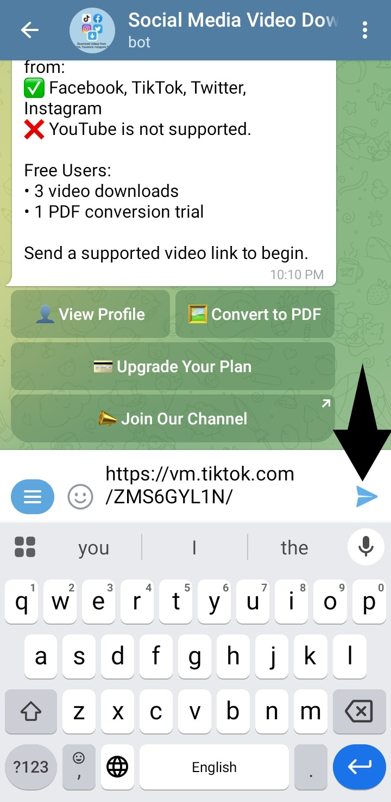
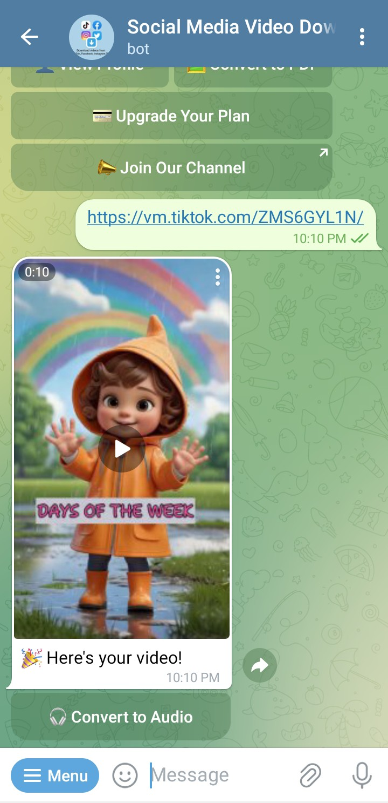

Download Facebook, Instagram & TikTok Videos on Telegram Bot
Easily download Facebook video on Telegram, download Instagram video on Telegram, or download TikTok video on Telegram using our free bot. No watermark, no ads, and no apps—just paste your link and get your video instantly.
Open @DownloadassaasBotMini Tutorial: How to Download Videos
- Copy the video link from Facebook, Instagram or TikTok. 
- Open Telegram and search for @DownloadassaasBot. 
- Paste the link into the chat and hit Send. 
- Bot returns your downloadable video file in seconds—click to save!

Supported Platforms
- Facebook videos & reels
- Instagram posts, reels & stories
- TikTok videos
Frequently Asked Questions
Can I download Facebook video on Telegram?
Yes—just copy the Facebook video link and paste it in @DownloadassaasBot.
How do I download Instagram video on Telegram?
Copy any Instagram post or reel link, send it to the bot, and it replies with the download.
Can I download TikTok video on Telegram?
Absolutely. Paste the TikTok link and get a watermark-free download immediately.
Is this bot really free?
Yes! We do not charge fees or show ads. All features are 100% free.
Do I need an extra app or account?
No—just Telegram and the bot. No sign-ups, no installations.
File size limits?
Telegram bots support uploads up to 2 GB. Smaller videos download instantly.